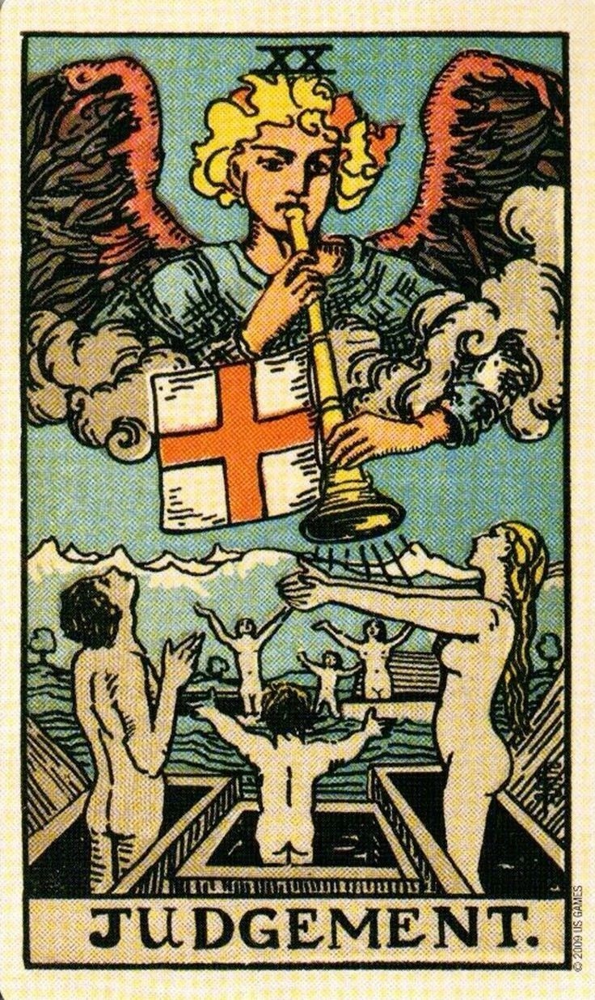

✦ ✦ ✦
Nine cards. Three stages of the craft. Each drawn from the Major Arcana.
The nine paths have been walked. Memory and fog, guild and trial, the crossing of worlds. One final mystery awaits beyond the veil.
Step forward when you are ready.

“The nine paths have been walked. The memory has been mastered. The fog has been read by lantern. The guild has been briefed, the trial endured, the worlds crossed. Judgement does not ask whether you are ready. It announces that you already are.”
You have moved through the complete arc of localization project management: from the foundational alchemy of Translation Memory to the highest craft of Transcreation. Each card was a discipline. Together they are a programme. And a programme needs a keeper.
The complete localization PM does not merely manage tasks; they hold the whole: the cost and the craft, the machine and the human, the brief and the delivery, the asset and the relationship. The Oracle’s counsel is this: you have seen all nine faces. Trust what you know.
The cards have named the disciplines. These are the voices, courses, and communities that map the territory further.
If you made it to the tenth card and clicked three times: you have walked all nine paths of the localization craft and gone further still. That is exactly the kind of attention to detail this work is about.
I am a Localization Project Manager with hands-on experience across TM leverage, LQA, MTPE, vendor management, and cultural adaptation. I built this oracle to show, not just tell.
✦ The Oracle rewards the persistent ✦